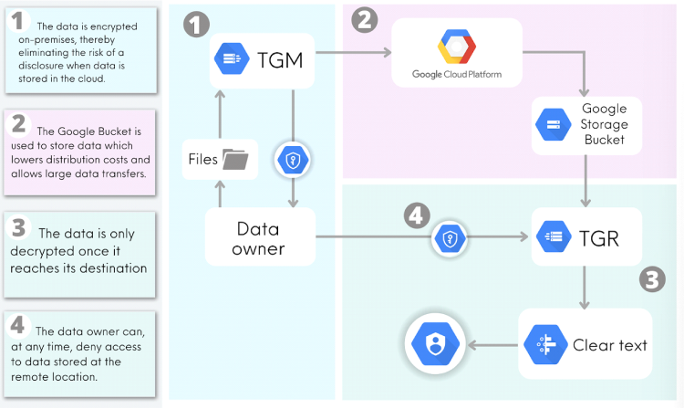

Transfer General (TG) uses cryptography to empower data owners to securely distribute or archive
highly-sensitive data no matter where the data resides - in a data center or the cloud.
There is no need to set up virtual private networks thereby lowering overall data
transfer/distribution/archival
costs.
TG provides all the benefits of using Google Cloud storage while mitigating risks associated with it.
TG is an ideal solution for organizations that deal with in-scope data.
See how it works
Challenges
#1
How to share highly-sensitive data securely with partners?
Transfer General helps data owners share highly confidential data securely with their partners no matter where
the data source is located. The data is encrypted before it leaves the secure confines of your network. A
Google Storage bucket acts as the distribution point. The data remains encrypted till it reaches its
destination. No VPN is required.
#2
How to archive in-scope data in a cloud storage bucket?
If you want to take advantage of cloud storage to lower your archival cost but are afraid to do so because of
potential security risks, then Transfer General can help. You will encrypt your data before it’s uploaded,
control your data encryption key, and automate transfers of your encrypted data into a Google storage bucket.
#3
How to transfer in-scope data across cloud platforms?
Many times contractual obligations and/or compliance requirements necessitate that only encrypted data be
transferred from one cloud platform to another. This is not easy unless you are managing your own data
encryption keys. Transfer General can.
Typical Transfer Genera Deployment

Why Transfer General?
Transfer General empowers data owners to safely share the most sensitive data with a partner without
setting
up a VPN.
Transfer General lowers corporate liability exposure by encrypting data before it leaves the secure
confines
of your network.
Transfer General lowers data sharing/archiving costs by enabling organizations to use Google Cloud
storage.
Only the encrypted data is stored in the cloud.
Transfer General helps to overcome corporate bandwidth limitations when sharing large data sets stored in
a
data center server.
Use cases
When you attempt to share highly sensitive data stored on-premises in your data center, you face multiple
challenges - should you directly transfer the data to mitigate potential data security risk, or do you
make
use of cloud storage so you have to upload the data only once and distribute it to multiple partners?
A direct transfer may not be possible depending on the size of the data and the corporate bandwidth at
your
disposal.
On the other hand, using a cloud bucket may be very attractive, but you just don’t want to deal with an
added
security risk.
That is where Transfer General comes in.
Transfer General will encrypt your data on-premises, allow you to maintain complete control over the data
encryption key, upload your encrypted data to a Google Storage bucket, and act as your distribution
center.
Since only the encrypted data is uploaded into the bucket, you will eliminate any potential data security
issue stemming from a storage bucket misconfiguration or a rogue storage administrator.
You’ll be able to push the data stored in the bucket to multiple destinations where the data will be
decrypted
for your intended audience.
You’ll be able to deny access to the data at any time with help of built-in cryptographic techniques.
If you want to take advantage of cloud storage to lower your archival cost but are afraid to do so because
of potential security risks, then Transfer General can help overcome this issue. You’ll be able to encrypt
your data on-premises, control your data encryption key, and automate transfers of your encrypted data
into a Google storage bucket. Since data stored in the bucket is encrypted and only you have access to the
data encryption key, you can rest assured that no rogue storage administrator will be able to read your
archived data in clear-text format. Transfer General will also help you download your encrypted data and
decrypt it within the safety of your network.
You can:
● Schedule one-time or recurring transfer operations.
● Delete existing objects in the destination bucket if they don't have a corresponding object in the
source.
● Delete data source objects after transferring them.
● Schedule periodic synchronization from a data source to the destination bucket based on file creation
dates, filenames, and the times of the day.
A data analytics company is getting unstructured data from various pharmacies. They plan to massage the
data using a third-party software package. The plan is to strip the patient information from the received
data, analyze the data for adverse reactions and provide information to pharmaceutical companies. The data
contains patient information and hence must be protected to comply with HIPAA. The company is using a
server offered by one of the cloud platform providers with a special emphasis on security. The pharmacy
uses the SFTP protocol to upload data and is not willing to make any changes to its operational routines.
The data analytics company is concerned about keeping the data secure once it has been uploaded. Moreover,
the data analytics company wants to keep the raw data around in case they need to revisit it at a later
date. The Transfer General (TG) solution can provide the necessary functionality and mitigate any
potential risk to the data while it is stored within the server or it has been archived.
TG supports the SFTP protocol. The pharmacy will be able to upload the information directly to the server.
TG will encrypt the data before it is stored on the disk using the AES algorithm. The company will use the
third-party package to massage the data and generate reports. The company will then use the TG to upload
the raw data into a cloud storage bucket. It’s important to note that only the encrypted data will be
uploaded into the bucket and only the company will have access to the data encryption key. The data can be
uploaded based on the following parameters:
● On a one-time or recurring schedule
● Delete existing objects in the destination bucket if they don't have a corresponding object in the
source.
● Delete data source objects after transferring them.
● Schedule periodic synchronization from a data source to the destination bucket based on file creation
dates, filenames, and the times of the day.
If the need arises, the TG will download the encrypted data from the cloud storage bucket onto their
server and decrypt it for further processing.
When you have to transfer regulated data from one cloud platform to another, you must conduct such
transfer so that no laws are broken during the process. Many organizations take their chances with such
transfers relying on the fact that the transfer period will be brief. However, If you are required to
maintain the confidentiality of the data, then you must transfer only the encrypted data between the two
platforms. However, that is not easy given that each platform provider uses its key management system
(KMS). Transfer General can help mitigate this issue. You’ll be able to encrypt your data before the
transfer and decrypt it once it arrives at its destination.
When you attempt to share highly sensitive data stored on-premises in your data center, you face multiple
challenges - should you directly transfer the data to mitigate potential data security risk, or do you make
use of cloud storage so you have to upload the data only once and distribute it to multiple partners?
A direct transfer may not be possible depending on the size of the data and the corporate bandwidth at your
disposal.
On the other hand, using a cloud bucket may be very attractive, but you just don’t want to deal with an
added
security risk.
That is where Transfer General comes in.
Transfer General will encrypt your data on-premises, allow you to maintain complete control over the data
encryption key, upload your encrypted data to a Google Storage bucket, and act as your distribution center.
Since only the encrypted data is uploaded into the bucket, you will eliminate any potential data security
issue stemming from a storage bucket misconfiguration or a rogue storage administrator.
You’ll be able to push the data stored in the bucket to multiple destinations where the data will be
decrypted
for your intended audience.
You’ll be able to deny access to the data at any time with help of built-in cryptographic techniques.